Introduction to VectorsCác khái niệm mở đầu về vectơ
Grade 10 · Topic: VectorsLớp 10 · Chủ đề: Vectơ
1Lesson IntroductionGiới thiệu bài học
Learning goalsMục tiêu bài học
By the end of this lesson you can:
Sau bài học này, em có thể:
recognise a vector, the zero vector and the length of a vector;
nhận biết vectơ, vectơ-không và độ dài của vectơ;
tell collinear, same-direction and opposite-direction vectors;
phân biệt hai vectơ cùng phương, cùng hướng, ngược hướng;
decide when two vectors are equal;
xác định khi nào hai vectơ bằng nhau;
describe a real quantity with a direction by a vector.
dùng vectơ mô tả đại lượng có hướng trong thực tế.
2Mathematical VocabularyTừ vựng Toán học
vector – a segment with a direction: one end is the start, the other is the end.
vectơ – đoạn thẳng có hướng: một đầu là điểm đầu, đầu kia là điểm cuối.
zero vector – a vector whose start and end are the same point.
vectơ-không – vectơ có điểm đầu và điểm cuối trùng nhau.
direction – the direction the arrow points to.
hướng của vectơ – hướng mà mũi tên chỉ tới.
collinear vectors – vectors whose lines are parallel or the same line.
cùng phương – hai vectơ có giá song song hoặc trùng nhau.
same direction – collinear vectors pointing the same way.
cùng hướng – hai vectơ cùng phương và mũi tên chỉ cùng một phía.
opposite directions – collinear vectors pointing opposite ways.
ngược hướng – hai vectơ cùng phương và mũi tên chỉ hai phía ngược nhau.
equal vectors – vectors with the same direction and the same length.
vectơ bằng nhau – hai vectơ cùng hướng và cùng độ dài.
opposite vector – the vector with the same length and the opposite direction.
vectơ đối – vectơ có cùng độ dài và ngược hướng với vectơ đã cho.
length of a vector – the length of the segment \(AB\).
độ dài của vectơ – độ dài của đoạn thẳng \(AB\).
3Useful English PhrasesCụm từ tiếng Anh thường gặp
Name a vector equal to \(\overrightarrow{AB}\).
Kể tên một vectơ bằng \(\overrightarrow{AB}\).
How many vectors are there?
Có bao nhiêu vectơ?
the start point and the end point
điểm đầu và điểm cuối
have the same direction
cùng hướng
Find the length of the vector.
Tìm độ dài của vectơ.
4Prerequisite ReviewÔn tập kiến thức nền
A segment \(AB\) has two end points. In a parallelogram the opposite sides are parallel and equal; in a regular hexagon all sides are equal and the diagonal through the center is twice a side.
Đoạn thẳng \(AB\) có hai đầu mút. Trong hình bình hành, các cạnh đối song song và bằng nhau; trong lục giác đều, các cạnh bằng nhau và đường chéo đi qua tâm bằng hai lần cạnh.
5TheoryLý thuyết
5.1 VectorsKhái niệm vectơ
DefinitionĐịnh nghĩa
A vector is a segment with a direction. Write \(\overrightarrow{AB}\) for the vector with start \(A\) and end \(B\). Its length is \(|\overrightarrow{AB}|=AB\). The zero vector \(\vec0=\overrightarrow{AA}\) has length 0 and any direction.
Vectơ là đoạn thẳng có hướng. Kí hiệu \(\overrightarrow{AB}\) là vectơ có điểm đầu \(A\), điểm cuối \(B\). Độ dài của vectơ là \(|\overrightarrow{AB}|=AB\). Vectơ-không \(\vec0=\overrightarrow{AA}\) có độ dài 0 và cùng hướng với mọi vectơ.
We can also name a vector by one letter: \(\vec a,\vec b,\vec u\).
Ta cũng có thể kí hiệu vectơ bằng một chữ cái: \(\vec a,\vec b,\vec u\).
5.2 Collinear vectorsHai vectơ cùng phương, cùng hướng, ngược hướng
Collinear vectorsHai vectơ cùng phương
Two vectors are collinear if their lines are parallel or the same. Collinear vectors are either in the same direction or in opposite directions. Three points \(A,B,C\) are on a line exactly when \(\overrightarrow{AB}\) and \(\overrightarrow{AC}\) are collinear.
Hai vectơ cùng phương nếu giá của chúng song song hoặc trùng nhau. Hai vectơ cùng phương thì cùng hướng hoặc ngược hướng. Ba điểm \(A,B,C\) thẳng hàng khi và chỉ khi \(\overrightarrow{AB}\) và \(\overrightarrow{AC}\) cùng phương.
5.3 Equal and opposite vectorsHai vectơ bằng nhau, vectơ đối
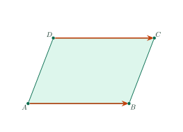
DefinitionĐịnh nghĩa
\(\vec a=\vec b\) when they have the same direction and the same length. The opposite vector of \(\overrightarrow{AB}\) is \(\overrightarrow{BA}=-\overrightarrow{AB}\). In a parallelogram \(ABCD\): \(\overrightarrow{AB}=\overrightarrow{DC}\) and \(\overrightarrow{AD}=\overrightarrow{BC}\).
\(\vec a=\vec b\) khi hai vectơ cùng hướng và cùng độ dài. Vectơ đối của \(\overrightarrow{AB}\) là \(\overrightarrow{BA}=-\overrightarrow{AB}\). Trong hình bình hành \(ABCD\): \(\overrightarrow{AB}=\overrightarrow{DC}\) và \(\overrightarrow{AD}=\overrightarrow{BC}\).
Watch out!Lưu ý
\(\overrightarrow{AB}\) and \(\overrightarrow{CD}\) in a parallelogram have the same length but opposite directions, so they are not equal.
Trong hình bình hành, \(\overrightarrow{AB}\) và \(\overrightarrow{CD}\) có cùng độ dài nhưng ngược hướng, nên không bằng nhau.
5.4 Vectors in real lifeVectơ trong thực tế
Velocity, force and displacement have a size and a direction, so we describe them by vectors. A boat moving 5 km east is the vector of length 5 pointing east.
Vận tốc, lực và độ dịch chuyển có độ lớn và hướng nên được mô tả bằng vectơ. Thuyền đi 5 km về hướng đông là vectơ có độ dài 5 chỉ về hướng đông.
6Worked ExamplesVí dụ có lời giải
ExampleVí dụ 1BasicCơ bản – Counting vectorsĐếm vectơ
There are 4 points \(A,B,C,D\), no three on a line. How many non-zero vectors have their start and end among these points?
Cho 4 điểm \(A,B,C,D\), không có ba điểm nào thẳng hàng. Có bao nhiêu vectơ khác vectơ-không có điểm đầu, điểm cuối thuộc các điểm đó?
Analysis: A vector needs a start and a different end; the order matters.
Phân tích: Mỗi vectơ cần điểm đầu và điểm cuối khác nhau; thứ tự có ý nghĩa.
Start: 4 ways. End: 3 ways.
Điểm đầu: 4 cách. Điểm cuối: 3 cách.
\(4\cdot3=12\) vectors.
\(4\cdot3=12\) vectơ.
ExampleVí dụ 2BasicCơ bản – Equal vectors in a parallelogramVectơ bằng nhau trong hình bình hành
\(ABCD\) is a parallelogram. Name the vectors equal to \(\overrightarrow{AB}\) and to \(\overrightarrow{AD}\).
Cho hình bình hành \(ABCD\). Kể tên các vectơ bằng \(\overrightarrow{AB}\) và bằng \(\overrightarrow{AD}\).
Analysis: Opposite sides are parallel and equal, and the arrows must point the same way.
Phân tích: Các cạnh đối song song, bằng nhau; mũi tên phải chỉ cùng phía.
\(AB\parallel DC\) and \(AB=DC\), with \(A\to B\) and \(D\to C\) in the same direction.
\(AB\parallel DC\), \(AB=DC\), và \(A\to B\), \(D\to C\) cùng hướng.
\(\overrightarrow{AB}=\overrightarrow{DC}\), \(\overrightarrow{AD}=\overrightarrow{BC}\).
\(\overrightarrow{AB}=\overrightarrow{DC}\), \(\overrightarrow{AD}=\overrightarrow{BC}\).
ExampleVí dụ 3IntermediateTrung bình – Vectors in a regular hexagonVectơ trong lục giác đều
\(ABCDEF\) is a regular hexagon with center \(O\). Name three vectors equal to \(\overrightarrow{AB}\).
Cho lục giác đều \(ABCDEF\) tâm \(O\). Kể tên ba vectơ bằng \(\overrightarrow{AB}\).
Analysis: \(OABC\)-type rhombuses: \(O\) and the hexagon make rhombuses.
Phân tích: Tâm \(O\) cùng các đỉnh của lục giác tạo thành các hình thoi.
\(OABC\) is a rhombus, so \(\overrightarrow{AB}=\overrightarrow{OC}\).
\(OABC\) là hình thoi nên \(\overrightarrow{AB}=\overrightarrow{OC}\).
Similarly \(\overrightarrow{AB}=\overrightarrow{ED}=\overrightarrow{FO}\).
Tương tự \(\overrightarrow{AB}=\overrightarrow{ED}=\overrightarrow{FO}\).
\(\overrightarrow{OC},\ \overrightarrow{ED},\ \overrightarrow{FO}\).
\(\overrightarrow{OC},\ \overrightarrow{ED},\ \overrightarrow{FO}\).
ExampleVí dụ 4IntermediateTrung bình – Length of a vectorĐộ dài của vectơ
\(ABCD\) is a rectangle with \(AB=6\) and \(AD=8\). Find \(|\overrightarrow{AC}|\).
Cho hình chữ nhật \(ABCD\) có \(AB=6\), \(AD=8\). Tính \(|\overrightarrow{AC}|\).
Analysis: The length of a vector is the length of the segment.
Phân tích: Độ dài vectơ là độ dài đoạn thẳng tương ứng.
\(|\overrightarrow{AC}|=AC=\sqrt{AB^2+AD^2}=\sqrt{36+64}\).
\(|\overrightarrow{AC}|=AC=\sqrt{AB^2+AD^2}=\sqrt{36+64}\).
\(|\overrightarrow{AC}|=10\).
\(|\overrightarrow{AC}|=10\).
ExampleVí dụ 5AdvancedNâng cao – Describe a displacementMô tả độ dịch chuyển
A ship sails 30 km east, then 40 km north. Use a vector to describe its displacement from the start. Find its length.
Một tàu đi 30 km về phía đông rồi 40 km về phía bắc. Dùng vectơ mô tả độ dịch chuyển so với điểm xuất phát và tính độ dài.
Analysis: The two legs are perpendicular.
Phân tích: Hai đoạn đi được vuông góc với nhau.
The displacement is the vector from the start \(A\) to the end \(C\).
Độ dịch chuyển là vectơ từ điểm xuất phát \(A\) đến điểm cuối \(C\).
\(AC=\sqrt{30^2+40^2}=50\).
\(AC=\sqrt{30^2+40^2}=50\).
\(|\overrightarrow{AC}|=50\) km.
\(|\overrightarrow{AC}|=50\) km.
7PracticeBài tập luyện tập
A. Multiple ChoiceA. Trắc nghiệm nhiều lựa chọn
There are 4 points, no three on a line. The number of non-zero vectors with both ends among them is…
Cho 4 điểm, không có ba điểm nào thẳng hàng. Số vectơ khác vectơ-không có điểm đầu, điểm cuối thuộc các điểm đó là…
Answer: b. Start: 4 ways, end: 3 ways.
Đáp án b. Điểm đầu: 4 cách, điểm cuối: 3 cách.
ABCD is a parallelogram with center O. Which vector equals \(\overrightarrow{AB}\)?
Cho hình bình hành ABCD tâm O. Vectơ nào bằng \(\overrightarrow{AB}\)?
Answer: b. Same direction and same length: \(\overrightarrow{AB}=\overrightarrow{DC}\).
Đáp án b. Cùng hướng và cùng độ dài: \(\overrightarrow{AB}=\overrightarrow{DC}\).
ABCD is a square with side 3. Then \(|\overrightarrow{AC}|^2\) equals…
ABCD là hình vuông cạnh 3. Khi đó \(|\overrightarrow{AC}|^2\) bằng…
Answer: d. The diagonal \(AC=a\sqrt2\).
Đáp án d. Đường chéo \(AC=a\sqrt2\).
\(M\), \(N\), \(P\) are the midpoints of \(AB\), \(AC\), \(BC\) (figure). Which vector is equal to \(\overrightarrow{NP}\)?
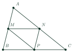
\(M\), \(N\), \(P\) lần lượt là trung điểm của \(AB\), \(AC\), \(BC\) (hình vẽ). Vectơ nào bằng \(\overrightarrow{NP}\)?
Answer: c. The midline is parallel to the third side and half as long; \(\overrightarrow{MB}\) has the same direction and length as \(\overrightarrow{NP}\).
Đáp án c. Đường trung bình song song và bằng nửa cạnh thứ ba; \(\overrightarrow{MB}\) cùng hướng, cùng độ dài với \(\overrightarrow{NP}\).
Among the vectors \(\vec b\), \(\vec c\), \(\vec d\), \(\vec e\) in the figure, how many have the same direction as \(\vec a\)?
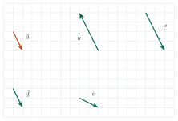
Trong các vectơ \(\vec b\), \(\vec c\), \(\vec d\), \(\vec e\) ở hình bên, có bao nhiêu vectơ cùng hướng với \(\vec a\)?
Answer: a. Count the arrows that are parallel to \(\vec a\) and point the same way: 2.
Đáp án a. Đếm các mũi tên song song với \(\vec a\) và chỉ cùng phía: 2.
B. True or FalseB. Đúng hoặc sai
In the parallelogram ABCD, \(\overrightarrow{AB}=\overrightarrow{DC}\).
Trong hình bình hành ABCD, \(\overrightarrow{AB}=\overrightarrow{DC}\).
Equal vectors need the same direction and the same length.
Hai vectơ bằng nhau phải cùng hướng và cùng độ dài.
In the regular hexagon ABCDEF with center O, \(\overrightarrow{OA}\) and \(\overrightarrow{OD}\) are opposite vectors.
Trong lục giác đều ABCDEF tâm O, \(\overrightarrow{OA}\) và \(\overrightarrow{OD}\) là hai vectơ đối nhau.
Opposite vectors have the same length and opposite directions.
Hai vectơ đối nhau có cùng độ dài và ngược hướng.
\(ABCD\) is a rectangle with center \(O\) (figure). \(\overrightarrow{AC}=\overrightarrow{BD}\).
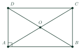
Cho hình chữ nhật \(ABCD\) tâm \(O\) (hình vẽ). \(\overrightarrow{AC}=\overrightarrow{BD}\).
Same length but not the same direction.
Cùng độ dài nhưng không cùng hướng.
C. Short AnswerC. Trả lời ngắn
There are 5 points, no three on a line. How many non-zero vectors have both ends among them?
Có 5 điểm phân biệt, không có ba điểm nào thẳng hàng. Có bao nhiêu vectơ khác vectơ-không có điểm đầu, điểm cuối thuộc các điểm đó?
Enter a number.
Nhập một số.
5·4=20.
5·4=20.
ABCD is a rectangle with AB = 6 and AD = 8. Find \(|\overrightarrow{AC}|\).
Hình chữ nhật ABCD có AB = 6, AD = 8. Tính \(|\overrightarrow{AC}|\).
Enter a number.
Nhập một số.
Pythagoras: \(\sqrt{6^2+8^2}=10\).
Định lí Pi-ta-go: \(\sqrt{6^2+8^2}=10\).
A. Multiple ChoiceA. Trắc nghiệm nhiều lựa chọn
There are 5 points, no three on a line. The number of non-zero vectors with both ends among them is…
Cho 5 điểm, không có ba điểm nào thẳng hàng. Số vectơ khác vectơ-không có điểm đầu, điểm cuối thuộc các điểm đó là…
Answer: b. Start: 5 ways, end: 4 ways.
Đáp án b. Điểm đầu: 5 cách, điểm cuối: 4 cách.
ABCD is a parallelogram with center O. Which vector equals \(\overrightarrow{AD}\)?
Cho hình bình hành ABCD tâm O. Vectơ nào bằng \(\overrightarrow{AD}\)?
Answer: b. Same direction and same length: \(\overrightarrow{AD}=\overrightarrow{BC}\).
Đáp án b. Cùng hướng và cùng độ dài: \(\overrightarrow{AD}=\overrightarrow{BC}\).
ABCD is a square with side 5. Then \(|\overrightarrow{AC}|^2\) equals…
ABCD là hình vuông cạnh 5. Khi đó \(|\overrightarrow{AC}|^2\) bằng…
Answer: d. The diagonal \(AC=a\sqrt2\).
Đáp án d. Đường chéo \(AC=a\sqrt2\).
In the figure, \(M\), \(N\), \(P\) are the midpoints of the sides of triangle \(ABC\). The vector equal to \(\overrightarrow{MN}\) is…
Trong hình, \(M\), \(N\), \(P\) là trung điểm các cạnh của tam giác \(ABC\). Vectơ bằng \(\overrightarrow{MN}\) là…
Answer: c. The midline is parallel to the third side and half as long; \(\overrightarrow{PC}\) has the same direction and length as \(\overrightarrow{MN}\).
Đáp án c. Đường trung bình song song và bằng nửa cạnh thứ ba; \(\overrightarrow{PC}\) cùng hướng, cùng độ dài với \(\overrightarrow{MN}\).
Among the vectors \(\vec b\), \(\vec c\), \(\vec d\), \(\vec e\) in the figure, how many are collinear with \(\vec a\)?
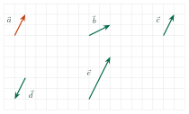
Trong các vectơ \(\vec b\), \(\vec c\), \(\vec d\), \(\vec e\) ở hình bên, có bao nhiêu vectơ cùng phương với \(\vec a\)?
Answer: a. Count the arrows that are parallel to \(\vec a\): 3.
Đáp án a. Đếm các mũi tên song song với \(\vec a\): 3.
B. True or FalseB. Đúng hoặc sai
In the parallelogram ABCD, \(\overrightarrow{AB}=\overrightarrow{CD}\).
Trong hình bình hành ABCD, \(\overrightarrow{AB}=\overrightarrow{CD}\).
Equal vectors need the same direction and the same length.
Hai vectơ bằng nhau phải cùng hướng và cùng độ dài.
In the regular hexagon ABCDEF with center O, \(\overrightarrow{AB}\) and \(\overrightarrow{DE}\) are opposite vectors.
Trong lục giác đều ABCDEF tâm O, \(\overrightarrow{AB}\) và \(\overrightarrow{DE}\) là hai vectơ đối nhau.
Opposite vectors have the same length and opposite directions.
Hai vectơ đối nhau có cùng độ dài và ngược hướng.
\(ABCD\) is a rectangle with center \(O\) (figure). \(|\overrightarrow{OA}|=|\overrightarrow{OB}|\).
Cho hình chữ nhật \(ABCD\) tâm \(O\) (hình vẽ). \(|\overrightarrow{OA}|=|\overrightarrow{OB}|\).
The diagonals of a rectangle are equal and bisect each other.
Hai đường chéo của hình chữ nhật bằng nhau và cắt nhau tại trung điểm mỗi đường.
C. Short AnswerC. Trả lời ngắn
There are 6 points, no three on a line. How many non-zero vectors have both ends among them?
Có 6 điểm phân biệt, không có ba điểm nào thẳng hàng. Có bao nhiêu vectơ khác vectơ-không có điểm đầu, điểm cuối thuộc các điểm đó?
Enter a number.
Nhập một số.
6·5=30.
6·5=30.
ABCD is a rectangle with AB = 5 and AD = 12. Find \(|\overrightarrow{AC}|\).
Hình chữ nhật ABCD có AB = 5, AD = 12. Tính \(|\overrightarrow{AC}|\).
Enter a number.
Nhập một số.
Pythagoras: \(\sqrt{5^2+12^2}=13\).
Định lí Pi-ta-go: \(\sqrt{5^2+12^2}=13\).
A. Multiple ChoiceA. Trắc nghiệm nhiều lựa chọn
There are 7 points, no three on a line. The number of non-zero vectors with both ends among them is…
Cho 7 điểm, không có ba điểm nào thẳng hàng. Số vectơ khác vectơ-không có điểm đầu, điểm cuối thuộc các điểm đó là…
Answer: b. Start: 7 ways, end: 6 ways.
Đáp án b. Điểm đầu: 7 cách, điểm cuối: 6 cách.
ABCD is a parallelogram with center O. Which vector equals \(\overrightarrow{BC}\)?
Cho hình bình hành ABCD tâm O. Vectơ nào bằng \(\overrightarrow{BC}\)?
Answer: b. Same direction and same length: \(\overrightarrow{BC}=\overrightarrow{AD}\).
Đáp án b. Cùng hướng và cùng độ dài: \(\overrightarrow{BC}=\overrightarrow{AD}\).
ABCD is a square with side 8. Then \(|\overrightarrow{AC}|^2\) equals…
ABCD là hình vuông cạnh 8. Khi đó \(|\overrightarrow{AC}|^2\) bằng…
Answer: a. The diagonal \(AC=a\sqrt2\).
Đáp án a. Đường chéo \(AC=a\sqrt2\).
Look at the figure (\(M\), \(N\), \(P\): midpoints of \(AB\), \(AC\), \(BC\)). Choose the vector that equals \(\overrightarrow{PN}\).
Quan sát hình (\(M\), \(N\), \(P\) là trung điểm của \(AB\), \(AC\), \(BC\)). Chọn vectơ bằng \(\overrightarrow{PN}\).
Answer: c. The midline is parallel to the third side and half as long; \(\overrightarrow{BM}\) has the same direction and length as \(\overrightarrow{PN}\).
Đáp án c. Đường trung bình song song và bằng nửa cạnh thứ ba; \(\overrightarrow{BM}\) cùng hướng, cùng độ dài với \(\overrightarrow{PN}\).
Among the vectors \(\vec b\), \(\vec c\), \(\vec d\), \(\vec e\) in the figure, how many are equal to \(\vec a\)?
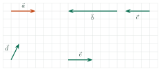
Trong các vectơ \(\vec b\), \(\vec c\), \(\vec d\), \(\vec e\) ở hình bên, có bao nhiêu vectơ bằng \(\vec a\)?
Answer: a. Count the arrows that are parallel to \(\vec a\), point the same way and have the same length: 1.
Đáp án a. Đếm các mũi tên song song với \(\vec a\), chỉ cùng phía và cùng độ dài: 1.
B. True or FalseB. Đúng hoặc sai
In the parallelogram ABCD, \(\overrightarrow{BC}=\overrightarrow{DA}\).
Trong hình bình hành ABCD, \(\overrightarrow{BC}=\overrightarrow{DA}\).
Equal vectors need the same direction and the same length.
Hai vectơ bằng nhau phải cùng hướng và cùng độ dài.
In the regular hexagon ABCDEF with center O, \(\overrightarrow{BC}\) and \(\overrightarrow{EF}\) are opposite vectors.
Trong lục giác đều ABCDEF tâm O, \(\overrightarrow{BC}\) và \(\overrightarrow{EF}\) là hai vectơ đối nhau.
Opposite vectors have the same length and opposite directions.
Hai vectơ đối nhau có cùng độ dài và ngược hướng.
\(ABCD\) is a rectangle with center \(O\) (figure). \(\overrightarrow{AO}=\overrightarrow{OC}\).
Cho hình chữ nhật \(ABCD\) tâm \(O\) (hình vẽ). \(\overrightarrow{AO}=\overrightarrow{OC}\).
Same direction and \(AO=OC\).
Cùng hướng và \(AO=OC\).
C. Short AnswerC. Trả lời ngắn
There are 8 points, no three on a line. How many non-zero vectors have both ends among them?
Có 8 điểm phân biệt, không có ba điểm nào thẳng hàng. Có bao nhiêu vectơ khác vectơ-không có điểm đầu, điểm cuối thuộc các điểm đó?
Enter a number.
Nhập một số.
8·7=56.
8·7=56.
ABCD is a rectangle with AB = 8 and AD = 15. Find \(|\overrightarrow{AC}|\).
Hình chữ nhật ABCD có AB = 8, AD = 15. Tính \(|\overrightarrow{AC}|\).
Enter a number.
Nhập một số.
Pythagoras: \(\sqrt{8^2+15^2}=17\).
Định lí Pi-ta-go: \(\sqrt{8^2+15^2}=17\).
D. Self-practice: Multiple ChoiceD. Tự luyện: trắc nghiệm
The figure shows two equal parallelograms \(ABED\) and \(BCFE\). How many vectors, other than \(\overrightarrow{AB}\), with both ends among the six points are equal to \(\overrightarrow{AB}\)?
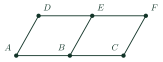
Hình vẽ gồm hai hình bình hành bằng nhau \(ABED\) và \(BCFE\). Có bao nhiêu vectơ khác \(\overrightarrow{AB}\), có hai đầu mút là hai trong sáu điểm, bằng \(\overrightarrow{AB}\)?
Answer: c. Equal vectors: \(\overrightarrow{BC}\), \(\overrightarrow{DE}\), \(\overrightarrow{EF}\).
Đáp án c. Các vectơ bằng nhau: \(\overrightarrow{BC}\), \(\overrightarrow{DE}\), \(\overrightarrow{EF}\).
\(ABCD\) is a rhombus with side \(5\) and \(\widehat{BAD}=60^\circ\) (figure). Then \(|\overrightarrow{AC}|=\)…
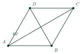
Hình thoi \(ABCD\) cạnh \(5\) có \(\widehat{BAD}=60^\circ\) (hình vẽ). Khi đó \(|\overrightarrow{AC}|=\)…
Answer: b. With \(\widehat{BAD}=60^\circ\), triangle ABD is equilateral; the other diagonal is \(5\sqrt{3}\).
Đáp án b. Vì \(\widehat{BAD}=60^\circ\) nên tam giác ABD đều; đường chéo còn lại bằng \(5\sqrt{3}\).
A student wrote: "Since \(|\overrightarrow{AB}|=|\overrightarrow{CD}|\), we get \(\overrightarrow{AB}=\overrightarrow{CD}\)." Which comment is correct?
Một bạn viết: "Vì \(|\overrightarrow{AB}|=|\overrightarrow{CD}|\) nên \(\overrightarrow{AB}=\overrightarrow{CD}\)." Nhận xét nào đúng?
Answer: b. Wrong: equal vectors also need the same direction.
Đáp án b. Sai: hai vectơ bằng nhau còn phải cùng hướng.
Which statement about the zero vector is correct?
Khẳng định nào về vectơ-không là đúng?
Answer: d. A zero vector has equal start and end points; it has length 0 and is collinear with (and has the same direction as) every vector.
Đáp án d. Vectơ-không có điểm đầu trùng điểm cuối, độ dài bằng 0, cùng phương và cùng hướng với mọi vectơ.
Car X drives east at \(60\) km/h and car Y drives west at \(v\) km/h on the same straight road. Their velocity vectors are opposite vectors…
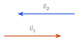
Xe X chạy về hướng đông với vận tốc \(60\) km/h, xe Y chạy về hướng tây với vận tốc \(v\) km/h trên cùng một đường thẳng. Hai vectơ vận tốc là hai vectơ đối nhau…
Answer: c. They already have opposite directions; opposite vectors also need equal lengths: \(v=60\).
Đáp án c. Hai vectơ đã ngược hướng; vectơ đối còn cần cùng độ dài: \(v=60\).
Triangle \(ABC\) is right-angled at \(A\) with \(AB=12\), \(AC=16\); \(M\) is the midpoint of \(BC\) (figure). Then \(|\overrightarrow{AM}|=\)…
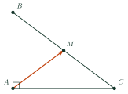
Tam giác \(ABC\) vuông tại \(A\) có \(AB=12\), \(AC=16\); \(M\) là trung điểm của \(BC\) (hình vẽ). Khi đó \(|\overrightarrow{AM}|=\)…
Answer: d. \(BC=\sqrt{12^2+16^2}=20\); the median to the hypotenuse is half of it: \(10\).
Đáp án d. \(BC=\sqrt{12^2+16^2}=20\); trung tuyến ứng với cạnh huyền bằng nửa cạnh huyền: \(10\).
\(ABCD\) is a parallelogram (figure). The point \(M\) satisfies \(\overrightarrow{BM}=\overrightarrow{AD}\). Then…
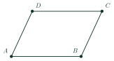
Cho hình bình hành \(ABCD\) (hình vẽ). Điểm \(M\) thỏa mãn \(\overrightarrow{BM}=\overrightarrow{AD}\). Khi đó…
Answer: c. In the parallelogram the opposite sides give equal vectors, so \(M\equiv C\).
Đáp án c. Trong hình bình hành các cặp cạnh đối cho các vectơ bằng nhau nên \(M\equiv C\).
Three different points \(A\), \(B\), \(C\) lie on one line exactly when…
Ba điểm phân biệt \(A\), \(B\), \(C\) thẳng hàng khi và chỉ khi…
Answer: b. Collinear is enough; the directions may be the same or opposite (\(A\) may lie between \(B\) and \(C\)).
Đáp án b. Chỉ cần cùng phương; hai vectơ có thể cùng hướng hoặc ngược hướng (\(A\) có thể nằm giữa \(B\) và \(C\)).
D. Self-practice: Multiple ChoiceD. Tự luyện: trắc nghiệm
The figure shows two equal parallelograms \(ABED\) and \(BCFE\). How many vectors, other than \(\overrightarrow{AD}\), with both ends among the six points are equal to \(\overrightarrow{AD}\)?
Hình vẽ gồm hai hình bình hành bằng nhau \(ABED\) và \(BCFE\). Có bao nhiêu vectơ khác \(\overrightarrow{AD}\), có hai đầu mút là hai trong sáu điểm, bằng \(\overrightarrow{AD}\)?
Answer: b. Equal vectors: \(\overrightarrow{BE}\), \(\overrightarrow{CF}\).
Đáp án b. Các vectơ bằng nhau: \(\overrightarrow{BE}\), \(\overrightarrow{CF}\).
\(ABCD\) is a rhombus with side \(2\) and \(\widehat{BAD}=120^\circ\) (figure). Then \(|\overrightarrow{AC}|=\)…
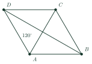
Hình thoi \(ABCD\) cạnh \(2\) có \(\widehat{BAD}=120^\circ\) (hình vẽ). Khi đó \(|\overrightarrow{AC}|=\)…
Answer: a. With \(\widehat{BAD}=120^\circ\), triangle ABC is equilateral; the other diagonal is \(2\sqrt{3}\).
Đáp án a. Vì \(\widehat{BAD}=120^\circ\) nên tam giác ABC đều; đường chéo còn lại bằng \(2\sqrt{3}\).
A student wrote: "Since \(\overrightarrow{AB}\) and \(\overrightarrow{CD}\) are collinear, they have the same direction." Which comment is correct?
Một bạn viết: "Vì \(\overrightarrow{AB}\) và \(\overrightarrow{CD}\) cùng phương nên chúng cùng hướng." Nhận xét nào đúng?
Answer: b. Wrong: collinear vectors may have opposite directions.
Đáp án b. Sai: hai vectơ cùng phương có thể ngược hướng.
Choose the true statement.
Chọn khẳng định đúng.
Answer: a. A zero vector has equal start and end points; it has length 0 and is collinear with (and has the same direction as) every vector.
Đáp án a. Vectơ-không có điểm đầu trùng điểm cuối, độ dài bằng 0, cùng phương và cùng hướng với mọi vectơ.
One lift goes up at \(3\) m/s while another goes down at \(v\) m/s. Their velocity vectors are opposite vectors…
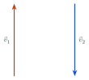
Một thang máy đi lên với vận tốc \(3\) m/s, thang máy khác đi xuống với vận tốc \(v\) m/s. Hai vectơ vận tốc là hai vectơ đối nhau…
Answer: b. They already have opposite directions; opposite vectors also need equal lengths: \(v=3\).
Đáp án b. Hai vectơ đã ngược hướng; vectơ đối còn cần cùng độ dài: \(v=3\).
Triangle \(ABC\) is right-angled at \(A\) with \(AB=5\), \(AC=12\); \(M\) is the midpoint of \(BC\) (figure). Then \(|\overrightarrow{AM}|=\)…
Tam giác \(ABC\) vuông tại \(A\) có \(AB=5\), \(AC=12\); \(M\) là trung điểm của \(BC\) (hình vẽ). Khi đó \(|\overrightarrow{AM}|=\)…
Answer: a. \(BC=\sqrt{5^2+12^2}=13\); the median to the hypotenuse is half of it: \(6.5\).
Đáp án a. \(BC=\sqrt{5^2+12^2}=13\); trung tuyến ứng với cạnh huyền bằng nửa cạnh huyền: \(6{,}5\).
\(ABCD\) is a parallelogram (figure). The point \(M\) satisfies \(\overrightarrow{DM}=\overrightarrow{AB}\). Then…
Cho hình bình hành \(ABCD\) (hình vẽ). Điểm \(M\) thỏa mãn \(\overrightarrow{DM}=\overrightarrow{AB}\). Khi đó…
Answer: a. In the parallelogram the opposite sides give equal vectors, so \(M\equiv C\).
Đáp án a. Trong hình bình hành các cặp cạnh đối cho các vectơ bằng nhau nên \(M\equiv C\).
Three distinct points \(A\), \(B\), \(C\) are collinear if and only if…
Ba điểm phân biệt \(A\), \(B\), \(C\) thẳng hàng khi và chỉ khi điều kiện nào xảy ra?
Answer: a. Collinear is enough; the directions may be the same or opposite (\(A\) may lie between \(B\) and \(C\)).
Đáp án a. Chỉ cần cùng phương; hai vectơ có thể cùng hướng hoặc ngược hướng (\(A\) có thể nằm giữa \(B\) và \(C\)).
D. Self-practice: Multiple ChoiceD. Tự luyện: trắc nghiệm
The figure shows two equal parallelograms \(ABED\) and \(BCFE\). How many vectors, other than \(\overrightarrow{AE}\), with both ends among the six points are equal to \(\overrightarrow{AE}\)?
Hình vẽ gồm hai hình bình hành bằng nhau \(ABED\) và \(BCFE\). Có bao nhiêu vectơ khác \(\overrightarrow{AE}\), có hai đầu mút là hai trong sáu điểm, bằng \(\overrightarrow{AE}\)?
Answer: c. Equal vectors: \(\overrightarrow{BF}\).
Đáp án c. Các vectơ bằng nhau: \(\overrightarrow{BF}\).
\(ABCD\) is a rhombus with side \(6\) and \(\widehat{BAD}=60^\circ\) (figure). Then \(|\overrightarrow{BD}|=\)…
Hình thoi \(ABCD\) cạnh \(6\) có \(\widehat{BAD}=60^\circ\) (hình vẽ). Khi đó \(|\overrightarrow{BD}|=\)…
Answer: d. With \(\widehat{BAD}=60^\circ\), triangle ABD is equilateral; the other diagonal is \(6\sqrt{3}\).
Đáp án d. Vì \(\widehat{BAD}=60^\circ\) nên tam giác ABD đều; đường chéo còn lại bằng \(6\sqrt{3}\).
A student wrote: "Since \(\overrightarrow{AB}=\overrightarrow{DC}\), the four points \(A\), \(B\), \(C\), \(D\) always form a parallelogram." Which comment is correct?
Một bạn viết: "Vì \(\overrightarrow{AB}=\overrightarrow{DC}\) nên bốn điểm \(A\), \(B\), \(C\), \(D\) luôn tạo thành hình bình hành." Nhận xét nào đúng?
Answer: c. Wrong: the four points may lie on one line.
Đáp án c. Sai: bốn điểm có thể cùng nằm trên một đường thẳng.
Which of the following is true?
Khẳng định nào sau đây đúng?
Answer: a. A zero vector has equal start and end points; it has length 0 and is collinear with (and has the same direction as) every vector.
Đáp án a. Vectơ-không có điểm đầu trùng điểm cuối, độ dài bằng 0, cùng phương và cùng hướng với mọi vectơ.
A boat moves north at \(15\) km/h; a second boat moves south at \(v\) km/h. Their velocity vectors are opposite vectors…
Một ca nô đi về hướng bắc với vận tốc \(15\) km/h; ca nô thứ hai đi về hướng nam với vận tốc \(v\) km/h. Hai vectơ vận tốc là hai vectơ đối nhau…
Answer: b. They already have opposite directions; opposite vectors also need equal lengths: \(v=15\).
Đáp án b. Hai vectơ đã ngược hướng; vectơ đối còn cần cùng độ dài: \(v=15\).
Triangle \(ABC\) is right-angled at \(A\) with \(AB=6\), \(AC=8\); \(M\) is the midpoint of \(BC\) (figure). Then \(|\overrightarrow{AM}|=\)…
Tam giác \(ABC\) vuông tại \(A\) có \(AB=6\), \(AC=8\); \(M\) là trung điểm của \(BC\) (hình vẽ). Khi đó \(|\overrightarrow{AM}|=\)…
Answer: d. \(BC=\sqrt{6^2+8^2}=10\); the median to the hypotenuse is half of it: \(5\).
Đáp án d. \(BC=\sqrt{6^2+8^2}=10\); trung tuyến ứng với cạnh huyền bằng nửa cạnh huyền: \(5\).
\(ABCD\) is a parallelogram (figure). The point \(M\) satisfies \(\overrightarrow{MD}=\overrightarrow{BC}\). Then…
Cho hình bình hành \(ABCD\) (hình vẽ). Điểm \(M\) thỏa mãn \(\overrightarrow{MD}=\overrightarrow{BC}\). Khi đó…
Answer: d. In the parallelogram the opposite sides give equal vectors, so \(M\equiv A\).
Đáp án d. Trong hình bình hành các cặp cạnh đối cho các vectơ bằng nhau nên \(M\equiv A\).
For distinct points \(A\), \(B\), \(C\), which condition means they lie on a line?
Với ba điểm phân biệt \(A\), \(B\), \(C\), điều kiện nào cho biết chúng thẳng hàng?
Answer: d. Collinear is enough; the directions may be the same or opposite (\(A\) may lie between \(B\) and \(C\)).
Đáp án d. Chỉ cần cùng phương; hai vectơ có thể cùng hướng hoặc ngược hướng (\(A\) có thể nằm giữa \(B\) và \(C\)).
8Common MistakesLỗi thường gặp
Writing the points in the wrong order. \(\overrightarrow{AB}\) starts at \(A\); \(\overrightarrow{BA}\) is the opposite vector.
Viết sai thứ tự điểm. \(\overrightarrow{AB}\) có điểm đầu \(A\); \(\overrightarrow{BA}\) là vectơ đối.
Equal length is not enough. Equal vectors also need the same direction.
Chỉ cùng độ dài là chưa đủ. Hai vectơ bằng nhau còn phải cùng hướng.
Confusing “collinear” with “equal”. Collinear vectors may have different lengths.
Nhầm “cùng phương” với “bằng nhau”. Hai vectơ cùng phương có thể có độ dài khác nhau.
Forgetting the zero vector. \(\overrightarrow{AA}=\vec0\) is not counted as a non-zero vector.
Quên vectơ-không. \(\overrightarrow{AA}=\vec0\) không được tính là vectơ khác vectơ-không.
9Lesson SummaryTổng kết
A vector has a start, an end, a direction and a length \(|\overrightarrow{AB}|=AB\).
Vectơ có điểm đầu, điểm cuối, hướng và độ dài \(|\overrightarrow{AB}|=AB\).
Collinear vectors: same or opposite direction.
Hai vectơ cùng phương: cùng hướng hoặc ngược hướng.
Equal vectors: same direction and same length; opposite vector of \(\overrightarrow{AB}\) is \(\overrightarrow{BA}\).
Hai vectơ bằng nhau: cùng hướng và cùng độ dài; vectơ đối của \(\overrightarrow{AB}\) là \(\overrightarrow{BA}\).
Key English words: vector, direction, length, equal, opposite.
Từ cần nhớ (chạm vào để xem tiếng Anh): vectơ; hướng của vectơ; độ dài; bằng nhau; ngược hướng.